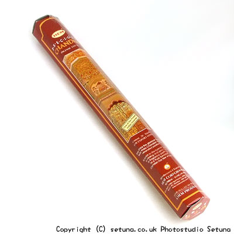

「何を買うか迷ったらとりあえずチャンダン香！」
と雑貨屋さんのPOPにありました。
それくらい有名なチャンダン香ですがそのまま信じて買わないで下さいね。(笑)
まず自分の好みを知ってから買いましょう。
「甘すぎる匂いが苦手」というかたは、インド香への先入観が「すごい苦手な物」になってしまう恐れがあります。
そのままだと香水入りの石けんのような匂いがします。
部屋に置きっぱなしだと「ルームフレグランスおいてる?」みたいな感じになってきます(笑)
はじめ覚悟せずに焚き始めるとそのかなりきつめの甘い香りに抵抗すら覚える方もいるかも・・・・
華やかでかなり甘めの香りがあっという間に部屋に広がります。
香りの表層はバラや百合などの香水の様に華やかに香り、奥底の方でサンダルのほのかな甘い香りがふくまれていて、甘さに奥深さを感じます。
就寝前に寝室等で使うと翌日の朝まで香りが残りゆったりとした眠りに誘われます。
部屋をいつも甘い良い香りで満たしたい方にはお勧めのお香でしょう。
嗅覚の優れている方は、部屋の隅など、自分の居る場所から少し離れた所で焚いた方がいいですね。
何故って・・・やってみたらわかります・・・・。
